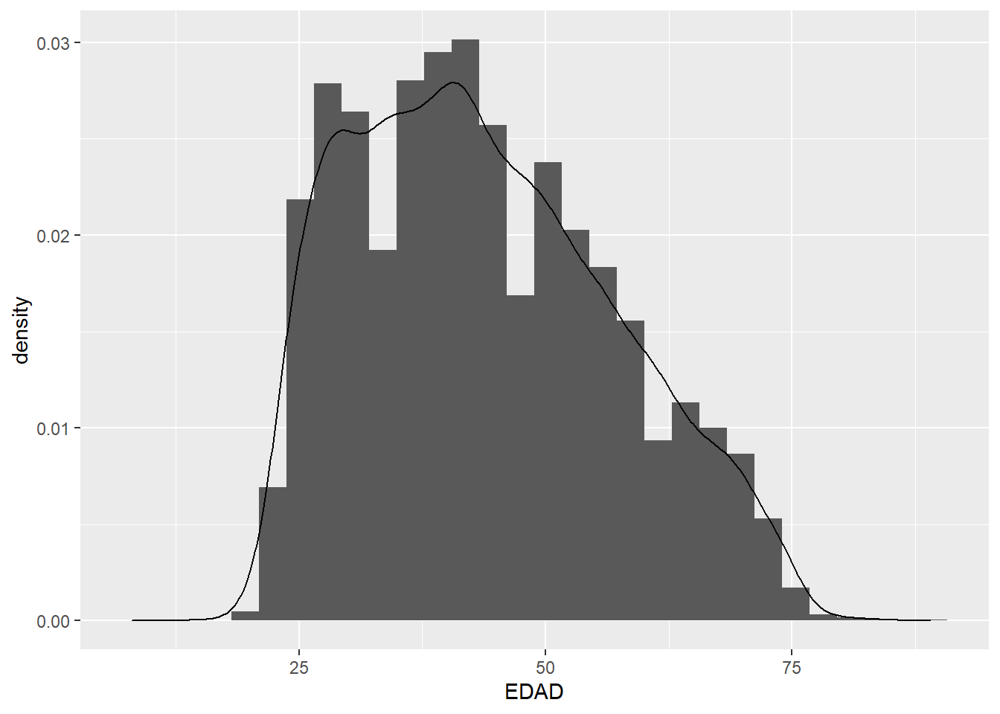

# Cargamos las librerías a emplearse
library(tidyverse)Laboratorio 1
En este documento, ejecuto análogamente las funciones y/o procesos que desarrollé en el notebook del laboratorio 1, versión Python.
datos <- read.csv(
"G:/Mi unidad/Colab Notebooks/Laboratorios/lab-01/TABLE_V0.csv",
sep = ','
)DT::datatable(head(datos))str(datos)'data.frame': 250000 obs. of 10 variables:
$ MES : int 201802 201803 201802 201802 201802 201801 201802 201802 201801 201802 ...
$ IDENTIFICADOR: int 120149287 144280398 104231747 22861718 17555111 102852949 115152326 100468060 156143722 49193652 ...
$ CLIENTE_TC : int 0 0 0 0 0 1 1 0 1 1 ...
$ CLIENTE_VEH : int 0 0 0 0 0 0 0 0 0 0 ...
$ CLIENTE_HIP : int 0 0 0 0 0 0 0 0 0 0 ...
$ CLIENTE_PP : int 0 0 1 0 0 0 0 0 0 0 ...
$ EDAD : int NA NA 41 75 NA 44 72 NA 30 41 ...
$ INGRESO_BRUTO: num NA NA 1571 NA NA ...
$ TIPO_CLIENTE : chr "INF. NO DISPONIBLE" "INF. NO DISPONIBLE" "DEPENDIENTE" "INDEPENDIENTE" ...
$ DEPARTAMENTO : chr "HUANUCO" "CAJAMARCA" "LIMA" "LIMA" ...datos$DEPARTAMENTO = as.character(datos$DEPARTAMENTO)
str(datos)'data.frame': 250000 obs. of 10 variables:
$ MES : int 201802 201803 201802 201802 201802 201801 201802 201802 201801 201802 ...
$ IDENTIFICADOR: int 120149287 144280398 104231747 22861718 17555111 102852949 115152326 100468060 156143722 49193652 ...
$ CLIENTE_TC : int 0 0 0 0 0 1 1 0 1 1 ...
$ CLIENTE_VEH : int 0 0 0 0 0 0 0 0 0 0 ...
$ CLIENTE_HIP : int 0 0 0 0 0 0 0 0 0 0 ...
$ CLIENTE_PP : int 0 0 1 0 0 0 0 0 0 0 ...
$ EDAD : int NA NA 41 75 NA 44 72 NA 30 41 ...
$ INGRESO_BRUTO: num NA NA 1571 NA NA ...
$ TIPO_CLIENTE : chr "INF. NO DISPONIBLE" "INF. NO DISPONIBLE" "DEPENDIENTE" "INDEPENDIENTE" ...
$ DEPARTAMENTO : chr "HUANUCO" "CAJAMARCA" "LIMA" "LIMA" ...skimr::skim(datos)| Name | datos |
| Number of rows | 250000 |
| Number of columns | 10 |
| _______________________ | |
| Column type frequency: | |
| character | 2 |
| numeric | 8 |
| ________________________ | |
| Group variables | None |
Variable type: character
| skim_variable | n_missing | complete_rate | min | max | empty | n_unique | whitespace |
|---|---|---|---|---|---|---|---|
| TIPO_CLIENTE | 0 | 1 | 11 | 18 | 0 | 3 | 0 |
| DEPARTAMENTO | 0 | 1 | 3 | 18 | 0 | 26 | 0 |
Variable type: numeric
| skim_variable | n_missing | complete_rate | mean | sd | p0 | p25 | p50 | p75 | p100 | hist |
|---|---|---|---|---|---|---|---|---|---|---|
| MES | 0 | 1.00 | 201801.98 | 0.82 | 201801 | 201801 | 201802 | 201803 | 201803 | ▇▁▇▁▇ |
| IDENTIFICADOR | 0 | 1.00 | 92079548.68 | 47093767.21 | 18367 | 52237913 | 94271359 | 132359575 | 171588299 | ▆▇▇▇▇ |
| CLIENTE_TC | 0 | 1.00 | 0.42 | 0.49 | 0 | 0 | 0 | 1 | 1 | ▇▁▁▁▆ |
| CLIENTE_VEH | 0 | 1.00 | 0.01 | 0.11 | 0 | 0 | 0 | 0 | 1 | ▇▁▁▁▁ |
| CLIENTE_HIP | 0 | 1.00 | 0.02 | 0.15 | 0 | 0 | 0 | 0 | 1 | ▇▁▁▁▁ |
| CLIENTE_PP | 0 | 1.00 | 0.23 | 0.42 | 0 | 0 | 0 | 0 | 1 | ▇▁▁▁▂ |
| EDAD | 106110 | 0.58 | 43.93 | 13.93 | 1 | 33 | 42 | 53 | 97 | ▁▇▇▃▁ |
| INGRESO_BRUTO | 114595 | 0.54 | 2714.40 | 3149.22 | 0 | 1382 | 1669 | 2783 | 137569 | ▇▁▁▁▁ |
Pregunta 1
# Omitimos filas duplicadas, en base a todas las columnas
datos <- dplyr::distinct(datos, .keep_all = TRUE)
# Contabilizamos las celdas vacías, antes de eliminarlas
vacios <- data.frame(
t(summarise_all(data.frame(is.na(datos)), sum))
)
colnames(vacios) = 'vacios'
vacios <- arrange(vacios, vacios)
vacios['vacios%'] <- round(100 * vacios['vacios']/dim(datos)[1], 2)
print(vacios) vacios vacios%
MES 0 0.00
IDENTIFICADOR 0 0.00
CLIENTE_TC 0 0.00
CLIENTE_VEH 0 0.00
CLIENTE_HIP 0 0.00
CLIENTE_PP 0 0.00
TIPO_CLIENTE 0 0.00
DEPARTAMENTO 0 0.00
EDAD 21222 42.44
INGRESO_BRUTO 22919 45.84# Excluímos las filas que contengan alguna celda vacía
print(dim(datos)) [1] 50000 10datos <- na.omit(datos)
print(dim(datos))[1] 26885 10# Filtramos en base a los meses del primer trimestre
filtro_mes <- datos[datos["MES"] < 201805,]
# Ordenamos el mes de mayor a menor, para eliminar los duplicados
# asociados a meses más tempranos
filtro_mes <- filtro_mes %>% arrange(desc(MES))
print(head(filtro_mes)) MES IDENTIFICADOR CLIENTE_TC CLIENTE_VEH CLIENTE_HIP CLIENTE_PP EDAD
1 201803 138219870 0 0 0 1 24
2 201803 27403751 0 0 0 0 62
3 201803 18386908 1 0 0 0 63
4 201803 108640307 1 0 0 0 25
5 201803 71523101 0 0 0 1 45
6 201803 89540975 1 0 0 0 31
INGRESO_BRUTO TIPO_CLIENTE DEPARTAMENTO
1 1132 INDEPENDIENTE LIMA
2 719 DEPENDIENTE LORETO
3 5810 INDEPENDIENTE LIMA
4 1269 DEPENDIENTE LIMA
5 3572 INDEPENDIENTE LIMA
6 2783 DEPENDIENTE CALLAO# Cantidad de personas con más de un movimiento registrado
print(sum(table(filtro_mes$IDENTIFICADOR) > 1))[1] 52# Descartamos los duplicados asociados a meses más tempranos
filtro_mes <- filtro_mes %>% distinct(IDENTIFICADOR, .keep_all = TRUE)
print(sum(table(filtro_mes$IDENTIFICADOR) > 1))[1] 0print(dim(filtro_mes))[1] 26833 10Pregunta 2
# Coeficiente de variación
agrupar_por_depa <- filtro_mes %>%
group_by(DEPARTAMENTO) %>%
summarize(coef_var = sd(INGRESO_BRUTO) / mean(INGRESO_BRUTO)) %>%
arrange(coef_var)
# Mostramos los resultados
DT::datatable(agrupar_por_depa)Pregunta 3
# Mediana del sueldo
print(median(filtro_mes$INGRESO_BRUTO))[1] 1679# Mediana de la edad
print(median(filtro_mes$EDAD))[1] 42Pregunta 4
# Para comparar distribuciones, la más homogénea es aquella que presenta un menor
# coeficiente de variación (asumiré lo mismo que en la pregunta 2 respecto a los valores atípicos)
print(sapply(filtro_mes, class)) MES IDENTIFICADOR CLIENTE_TC CLIENTE_VEH CLIENTE_HIP
"integer" "integer" "integer" "integer" "integer"
CLIENTE_PP EDAD INGRESO_BRUTO TIPO_CLIENTE DEPARTAMENTO
"integer" "integer" "numeric" "character" "character" # Recordemos que las variables respecto a tenencia de activos son
# CLIENTE_TC, CLIENTE_VEH, CLIENTE_HIP, CLIENTE_PP,
# todas variables cuantitativas
# Calculamos el coeficiente de variación
cv_tenencia_activos <- filtro_mes %>%
summarize(
across(
c(CLIENTE_TC, CLIENTE_VEH, CLIENTE_HIP, CLIENTE_PP),
function(x) { sd(x) / mean(x) }
)
)
cv_tenencia_activos <- cv_tenencia_activos %>%
t() %>% data.frame() %>% arrange(colnames(cv_tenencia_activos)[1])
cv_tenencia_activos .
CLIENTE_TC 0.6057657
CLIENTE_VEH 7.1136354
CLIENTE_HIP 4.8004964
CLIENTE_PP 1.2445992Pregunta 5
print(sapply(filtro_mes, class)) MES IDENTIFICADOR CLIENTE_TC CLIENTE_VEH CLIENTE_HIP
"integer" "integer" "integer" "integer" "integer"
CLIENTE_PP EDAD INGRESO_BRUTO TIPO_CLIENTE DEPARTAMENTO
"integer" "integer" "numeric" "character" "character" # Se ha registrado el ingreso bruto como un valor real (float64)
# Diagrama de caja
filtro_mes %>%
ggplot(aes(y=INGRESO_BRUTO)) +
geom_boxplot()# Como notamos del boxplot del ingreso bruto, se observa una gran cantidad de valores atípicos.
# Calculemos entonces sus medidas (apropiadas) de tendencia central y dispersión
print(quantile(filtro_mes$INGRESO_BRUTO, c(0.25, 0.50, 0.75))) 25% 50% 75%
1392 1679 2783 print(IQR(filtro_mes$INGRESO_BRUTO))[1] 1391# Medida de tendencia central: Mediana de 1679.0 \mu
# Medida de dispersión: Rango intercuartil de 1391.0 \mu
# Histograma
filtro_mes %>%
ggplot(aes(x=INGRESO_BRUTO)) +
geom_histogram()# Coeficiente de asimetría
print(moments::skewness(filtro_mes['INGRESO_BRUTO']))INGRESO_BRUTO
8.643145 # Este es positivo, así que se observa una cola jalada hacia la derecha.
# Coeficiente de curtosis
print(moments::kurtosis(filtro_mes['INGRESO_BRUTO']))INGRESO_BRUTO
218.7863 # La distribución no se asemeja a una distribución normal (gaussiana)
# Como hay varios valores atípicos presentes en la variable, la mejor medida de resumen
# es la mediana (la media se sesga por valores atípicos); y, la mejor de medida de variabilidad
# es el rango intercuartilr (la desviación estándar y varianza se sesgan por valores atípicos);
# esto ya que ambas variables no se ven tan afectadas ante la presencia de valores atípicos en la data.# Se nos pide el cuantil 0.7
print(quantile(filtro_mes$INGRESO_BRUTO, 0.7)) 70%
2470 # El ingreso bruto de la persona que supera el 70% de las personas con menores ingresos
# es de 2470.0 \mu .Pregunta 6
# Note que la variable EDAD es cuantitativa y la variable TIPO_CLIENTE es cualitativa,
# así que el análisis marginal será respecto a EDAD
head(filtro_mes[,c("EDAD","TIPO_CLIENTE")], 10) EDAD TIPO_CLIENTE
1 24 INDEPENDIENTE
2 62 DEPENDIENTE
3 63 INDEPENDIENTE
4 25 DEPENDIENTE
5 45 INDEPENDIENTE
6 31 DEPENDIENTE
7 47 DEPENDIENTE
8 34 DEPENDIENTE
9 36 INDEPENDIENTE
10 51 DEPENDIENTE# Distribución marginal
print(mean(filtro_mes$EDAD))[1] 43.35117filtro_mes %>%
ggplot(aes(x=EDAD)) +
geom_histogram(aes(y = ..density..)) +
geom_density()# Distribución condicional
# Categorías
print(unique(filtro_mes$TIPO_CLIENTE))[1] "INDEPENDIENTE" "DEPENDIENTE" # Caso "INDEPENDIENTE"
print(mean(filtro_mes[filtro_mes['TIPO_CLIENTE']=='INDEPENDIENTE',]$EDAD))[1] 43.79451filtro_mes %>%
filter(TIPO_CLIENTE == "INDEPENDIENTE") %>%
ggplot(aes(x=EDAD)) +
geom_histogram(aes(y = ..density..)) +
geom_density()
# Caso "DEPENDIENTE"
print(mean(filtro_mes[filtro_mes['TIPO_CLIENTE']=='DEPENDIENTE',]$EDAD))[1] 42.86287filtro_mes %>%
filter(TIPO_CLIENTE == "DEPENDIENTE") %>%
ggplot(aes(x=EDAD)) +
geom_histogram(aes(y = ..density..)) +
geom_density()# Comparación
ggplot() +
# Caso condicional
geom_histogram(
data = filtro_mes, aes(x = EDAD, y = ..density.., col = TIPO_CLIENTE),
fill="transparent", position="dodge"
) +
geom_density(data = filtro_mes, aes(x = EDAD, col = TIPO_CLIENTE), alpha = .25) +
# Caso marginal
geom_histogram(
data = filtro_mes, aes(x = EDAD, y = ..density..),
color ="green", fill="transparent", position="dodge"
) +
geom_density(data = filtro_mes, aes(x = EDAD), alpha = .25) +
ggtitle("Distribución marginal (verde) vs Distribuciones condicionales")